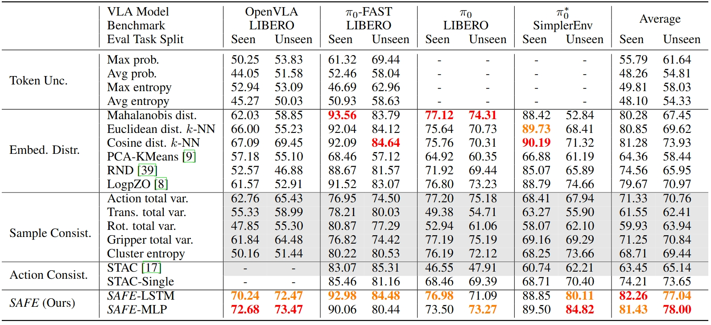

SAFE: Multitask Failure Detector for VLA Models
Based on the above observation, we propose SAFE, a failure detector that learns from VLA internal features and predicts a single scalar indicating the likelihood of task failure. SAFE has 3 main components:
- Feature Extraction: SAFE extracts the latent feature from the last layer of a VLA model. In experiments, we ablate different ways of extracting features and aggregate them into a single feature vector.
- Learning Failure Detector: SAFE sequentially processes the latent feature and predicts a failure score, using an MLP or an LSTM backbone. These models are of 1 or 2 layers to reduce overfitting and improve generalization.
- Calibration and Deployment: SAFE determines a time-varying threshold using functional conformal prediction (CP) on a hold-out calibration set. If the predicted score exceeds the threshold during testing, SAFE confidently detects a failure.
Experiments and Results
We evaluate the following diverse baselines. All the baselines use the same conformal prediction framework as SAFE to determine the time-varying threshold.
- Token Uncertainty: Failure scores are computed based on token-wise uncertainty (probability and entropy).
- Embedding Distribution: Failure scores are computed based on the embedding distances to the calibration distribution.
- Sample Consistency: Multiple actions are sampled and failure scores are the inconsistency among the samples.
- Action Consistency: We adopt STAC scores and also STAC-single that only uses a single sample per timestep.
We conduct experiments on OpenVLA, π0 and π0-FAST VLA models on LIBERO, SimplerEnv benchmarks and a real-world Franka robot.
How well do failure detectors distinguish failures from successes?
Following the LLM uncertainty quantification literature, we report the ROC curve (ROC-AUC) metrics in the following figure, which are computed based on the max predicted failure score in each rollout. ROC-AUC averages the performance over all possible thresholds, which reflects the overall failure detection performance regardless of threshold selection.
How do detection accuracy and detection time trade off using functional CP?